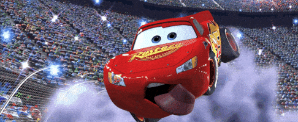
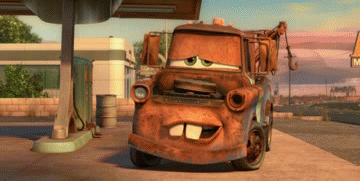

History Carros
History McQueen

McQueen é um carro de corrida jovem, talentoso e muito ambicioso. No começo, ele só pensa em fama, dinheiro e em ganhar a Copa Pistão. Ele acredita que não precisa de ninguém para vencer.
Durante uma viagem para a grande corrida decisiva, ele se perde e acaba indo parar em uma pequena cidade chamada Radiator Springs.

History Tom Mate
Mate é simples, engraçado e muito bondoso. Ele trabalha rebocando carros e adora contar histórias. Apesar de parecer atrapalhado, ele tem um coração enorme.Principais detalhes da história de Mate:
Origem e Aparência: Nascido em Radiator Springs, Mate era originalmente azul bebê. Ele perdeu o capô em uma brincadeira de infância e ficou enferrujado com o tempo.
Personalidade: É descrito como um personagem honesto, charmoso e ingênuo, mas com grande conhecimento de mecânica e improviso.
Destaques: Em Carros 2, ele se envolve em espionagem internacional, tornando-se um agente secreto e sendo condecorado pela Rainha da Inglaterra.

History Doc Hudson
Doc Hudson é um carro azul-escuro modelo Hudson Hornet 1951, conhecido na pequena cidade de Radiator Springs como médico e juiz local. Ele é sério, reservado e aparentemente apenas um morador comum da cidade — mas esconde um passado lendário.
O passado como corredor: O Fabuloso Hudson Hornet
Antes de viver em Radiator Springs, Doc era conhecido como “O Fabuloso Hudson Hornet”, um dos maiores campeões da história da Copa Pistão.
History Francesco
Francesco Bernoulli é um personagem do filme Cars 2.
Ele é um carro de corrida italiano inspirado na Fórmula 1.
Francesco é conhecido por sua grande velocidade nas pistas.
Ele é extremamente confiante em suas habilidades.
Muitas vezes demonstra uma personalidade arrogante.
Apesar disso, também é carismático e divertido.
Ele participa do Grand Prix Mundial.
A competição reúne carros de vários países.
Francesco representa a Itália no torneio.
Seu principal rival é Relâmpago McQueen.
Os dois disputam corridas emocionantes.
Francesco gosta de provocar seus adversários.
Ele acredita ser o carro mais rápido do mundo.
Seu design é elegante e aerodinâmico.
Ele tem as cores da bandeira italiana.
Durante o filme, mostra grande habilidade nas curvas.
Também demonstra espírito competitivo.
Mesmo sendo rival, respeita bons corredores.
Sua presença traz humor e rivalidade à história.
Francesco é um dos personagens mais marcantes do filme.